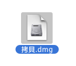
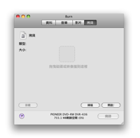
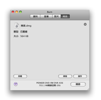
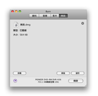

拷貝光碟:
Burn 可以使用光碟映像檔. 這些檔案代表一個光碟. Burn 支援您也可以拷貝一個存在的光碟.
註解: 無法拷貝多重區段光碟, 如有額外功能的音樂光碟 (但是這不確定是否被拷貝).
在 Panther 只有 cdr, toast, iso 與非常基本的 cue/bin檔案可以被燒錄. 其他映像檔可以被在裝載後使用他們並拖曳他們到清單裡.
1 選擇一個光碟 (映像檔):
選擇一個燒錄到光碟裡的映像檔或光碟.

2 拖曳映像檔或光碟到視窗裡
拖曳光碟映像檔 (dmg, img, toast, iso, cdr, dvdr, cue/bin 與 TOC) 或光碟到燒錄主視窗.
 

3 點擊燒錄
這將出現一個對話框.

4 選擇選項
選擇燒錄區段的選項. 須要更多的設定, 請檢視在Burn清單中裡的偏好設定.

5 燒錄光碟
現在按下燒錄以燒錄光碟.

6 Burn
將燒錄光碟
當燒錄時 Burn 將會顯示一個燒錄狀態的對話框.